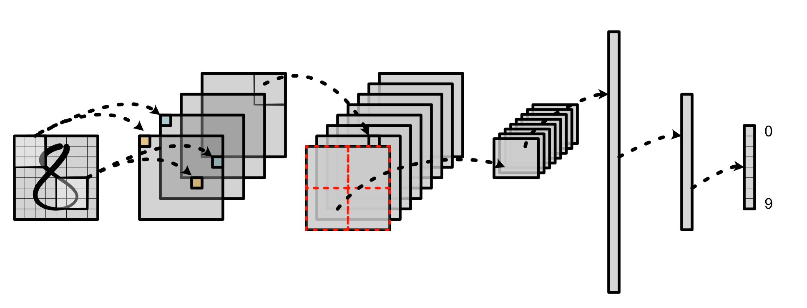

MiniTorch
MiniTorch is a diy teaching library for machine learning engineers who wish to learn about the internal concepts underlying deep learning systems. It is a pure Python re-implementation of the Torch API designed to be simple, easy-to-read, tested, and incremental. The final library can run Torch code.

The main repo for the course is available on GitHub. To complete the assignments you fill in TODO statements and pass the included unit test suite. There are also additional visualization tools to follow your progress.
class ReLU(ScalarFunction):
@staticmethod
def forward(ctx, a):
# TODO: Implement for Task 1.2.
raise NotImplementedError('Need to implement for Task 1.2')
@staticmethod
def backward(ctx, d_output):
# TODO: Implement for Task 1.4.
raise NotImplementedError('Need to implement for Task 1.4')
Individual assignments cover:
- ML Programming Foundations
- Autodifferentiation
- Tensors
- GPUs and Parallel Programming
- Foundational Deep Learning
The project was developed for the course Machine Learning Engineering at Cornell Tech and based on my experiences working at Hugging Face. Reach out if you are interested in the teacher's version of the repository.
Enjoy!
Sasha Rush (@srush_nlp) with Ge Gao, Anton Abilov, and Aaron Gokaslan.